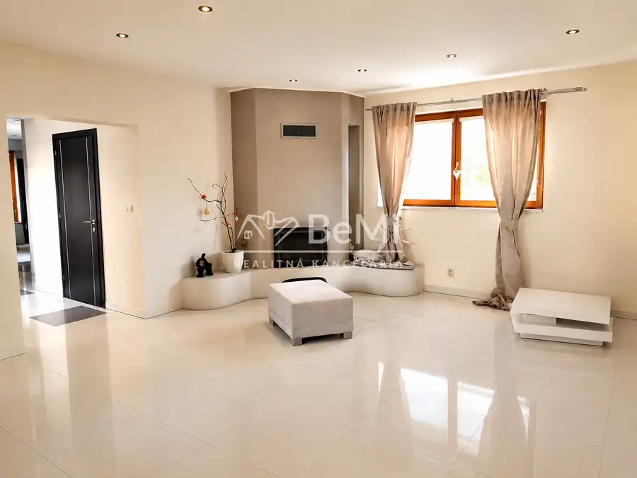
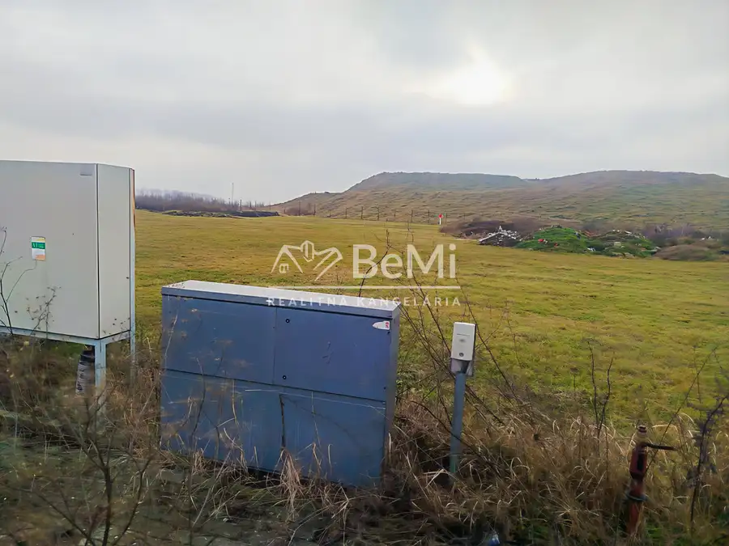
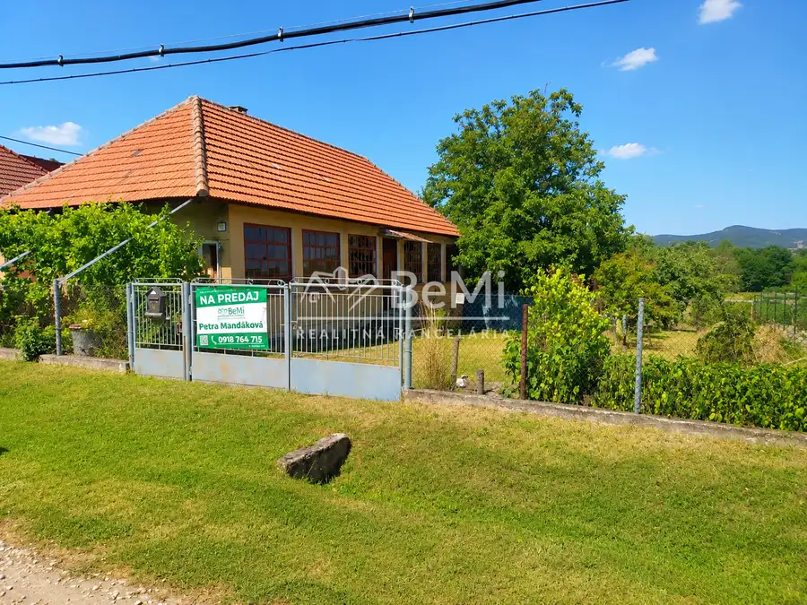
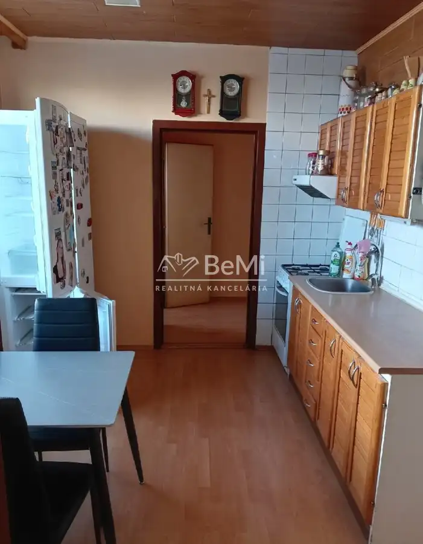
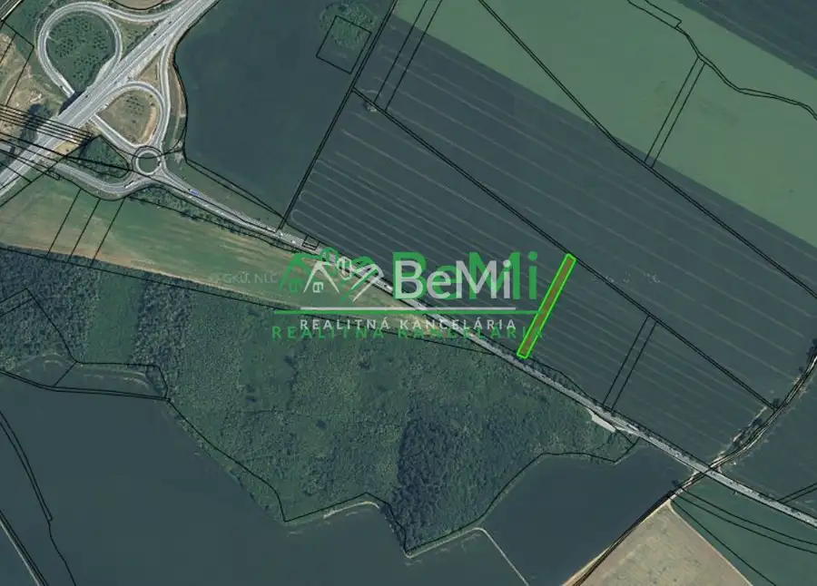
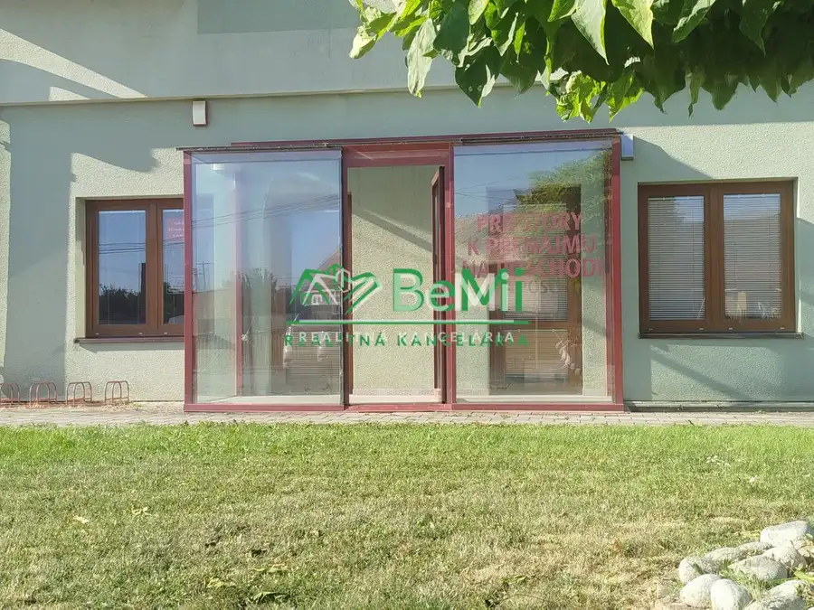

Aktuálna ponuka
6 nehnuteľností, predovšetkým pozemky, rodinné domy, komerčné priestory. Každá má vlastnú stránku s fotkami, popisom a mapou.
Prezrieť ponuku
 Tu bude Vaša fotkapošlite ju e-mailom, obratom ju vymeníme
Tu bude Vaša fotkapošlite ju e-mailom, obratom ju vymenímePetra Mandáková · Realitná maklérka · BeMi realitná kancelária
Volám sa Petra Mandáková, som realitná maklérka kancelárie BeMi realitná kancelária. Predaj, prenájom a odhad ceny nehnuteľností, lokality Nitra, Diakovce a Lehota.
Viac o mneVolám sa Petra Mandáková. Som realitná maklérka kancelárie BeMi realitná kancelária a pôsobím predovšetkým v lokalitách Nitra, Diakovce, Lehota a Výčapy-Opatovce (Nitriansky kraj).

6 nehnuteľností, predovšetkým pozemky, rodinné domy, komerčné priestory. Každá má vlastnú stránku s fotkami, popisom a mapou.
Prezrieť ponuku
Nitra, Diakovce, Lehota, Výčapy-Opatovce, Jelenec a okolie. Ponuku si môžete prezrieť podľa lokality.
Nehnuteľnosti v lokalite
Odhad trhovej ceny, príprava prezentácie, obhliadky, zmluvy a odovzdanie nehnuteľnosti.
Dohodnúť stretnutie
Pozemok 30 000 €0017-14-PAMA Ponúkame na predaj pozemok poľnohospodársku pôdu v Nitre -2889 m2 Nitra
Komerčné priestoryPredané Predané033-25-PAMA Prenájom priestorov – Výčapy-Opatovce Výčapy-Opatovce 82 m²Tomuto výberu zatiaľ nezodpovedá žiadna ponuka. Napíšte mi, čo hľadáte.
Každý špendlík je jedna nehnuteľnosť z mojej ponuky. Kliknite a pozrite sa.
© prispievatelia OpenStreetMap
Na čo sa pýtate najčastejšie, skôr než sa stretneme.
Odhad trhovej ceny vychádza z aktuálnych ponúk a predajov v lokalite, nie z cenníkových tabuliek. Podmienky Vám poviem pri prvom telefonáte.
Najprv obhliadka a odhad ceny, potom príprava prezentácie (fotografie, popis, inzercia), obhliadky so záujemcami, rezervačná zmluva, kúpna zmluva, návrh na vklad do katastra a odovzdanie nehnuteľnosti. O každom kroku viete vopred.
Najrýchlejšie cez WhatsApp alebo telefón. Termín stretnutia alebo obhliadky dohodneme podľa Vás.